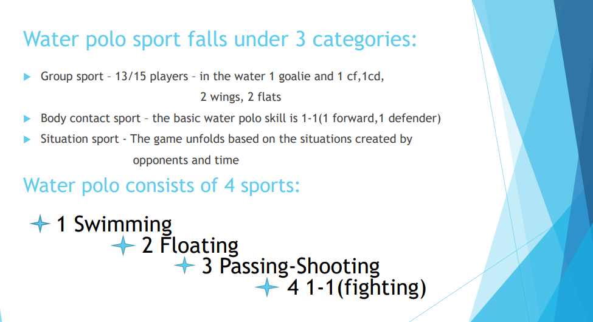
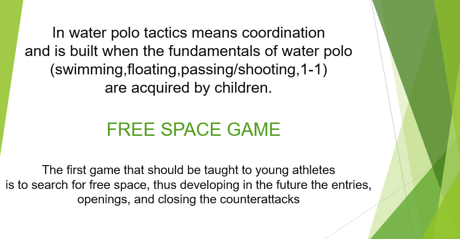
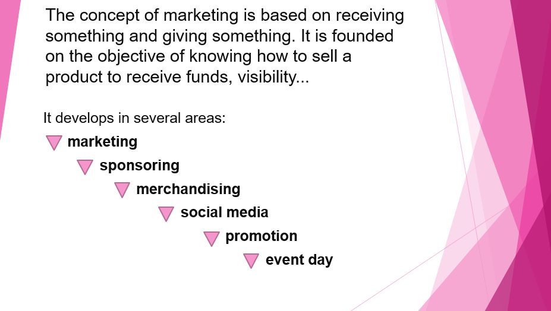
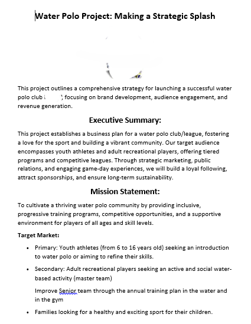
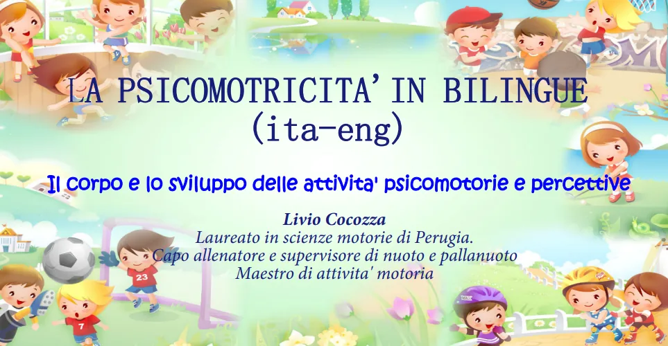
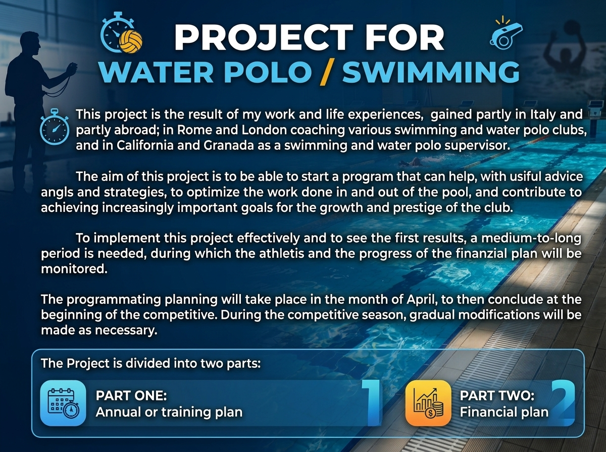
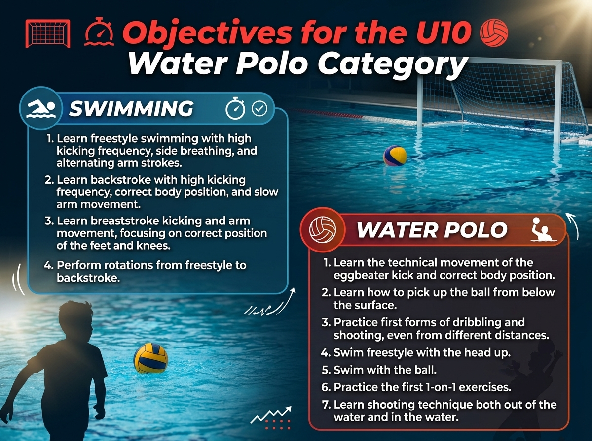
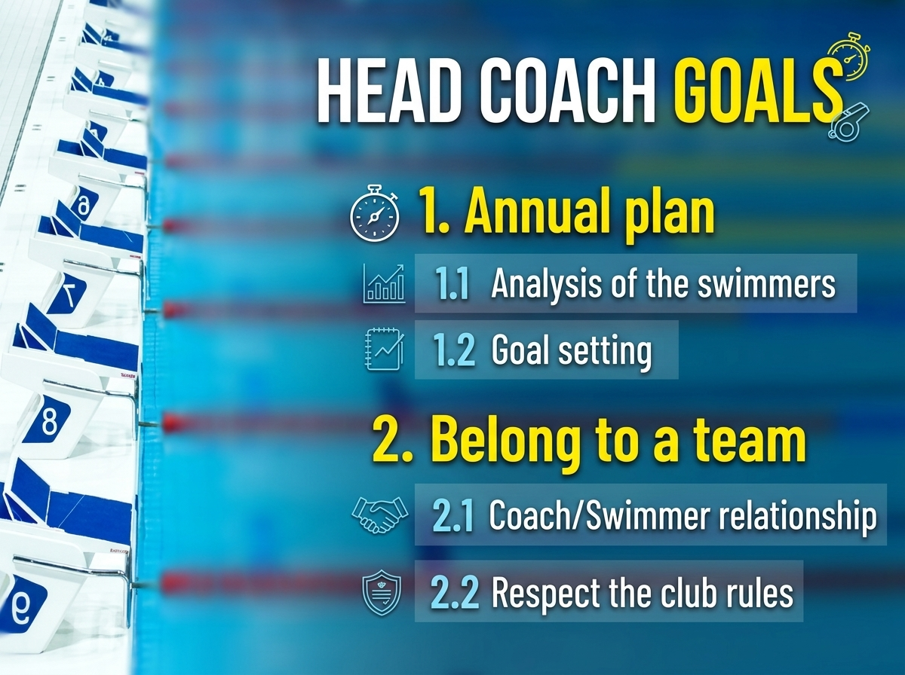
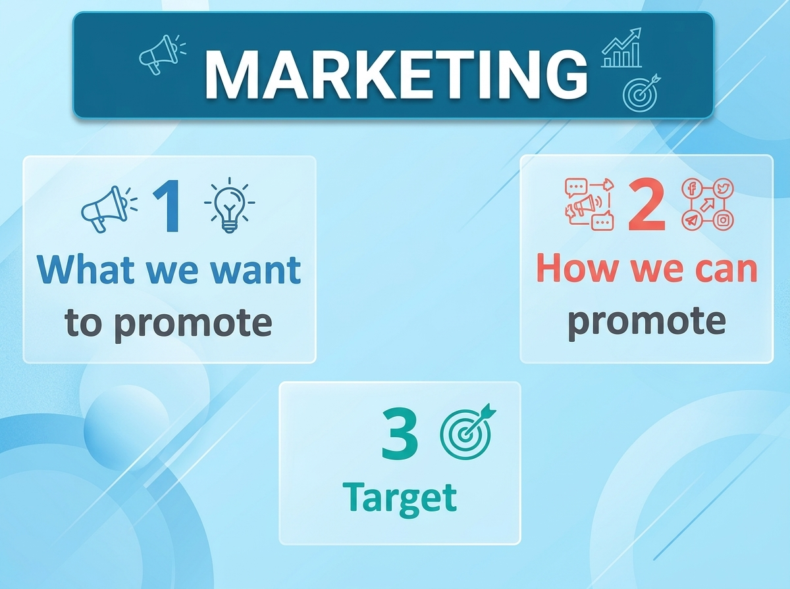

Projects
A selection of coaching, performance, education and aquatic development experiences. This portfolio will grow with project photographs, key outcomes and practical insights.

Water Polo Fundamentals
An overview of the game: team structure, body contact and the four essential skills — swimming, floating, passing and shooting, and 1-v-1 play.

Free Space Game
A tactical concept built on coordination and mastery of the fundamentals, helping young athletes recognise space, create openings and develop counterattacks.

Marketing & Sponsorship
Exploring the key areas of sports promotion: marketing, sponsorship, merchandising, social media, promotion and event days.

Building a Water Polo Club
A strategic project outlining a club business plan, mission, target audiences, programme development and long-term sustainability.

Psychomotricity in Bilingual Education
A learning project on body awareness and the development of psychomotor and perceptual activities in Italian and English.
Club Development & Strategic Planning
Practical frameworks for analysing a club's past, strengthening its present and planning sustainable growth.
.webp)
A Plan to Develop a Club
A long-term development approach: analyse the past, build the present and create a clear direction for the future.
.webp)
One-Year Club Development Plan
An integrated annual and business plan covering swim testing, new programme development, staff meetings, events and training cycles, alongside community and club engagement.
.webp)
Setting Club Goals
Three priorities for club development: raise the competitive level, recruit more players and establish annual and business plans.

Water Polo & Swimming Project
A practical programme combining an annual training plan and a financial plan, informed by coaching and supervisory experience in Italy and abroad.
Training Methodology & Athlete Development
Structured approaches to performance, coaching priorities and age-group development.
.webp)
The Four Pillars of Performance
A holistic and specific framework built around four coaching questions: what, why, when and where.

U10 Development Objectives
A progressive pathway combining swimming skills and water polo fundamentals, from body position and ball handling to dribbling, shooting and first one-on-one exercises.

Head Coach Goals
A coaching framework focused on annual planning, swimmer analysis, goal setting, team belonging, coach-athlete relationships and respect for club rules.
Sports Marketing & Club Promotion
Tools and ideas to strengthen a club's identity, communicate its value and reach the right audience.
.webp)
Marketing in the Club
Four practical areas for club growth: restyling, innovation, promotion and recruitment.

What, How & Who to Promote
A simple communication framework: define what the club wants to promote, choose how to communicate it and identify the target audience.